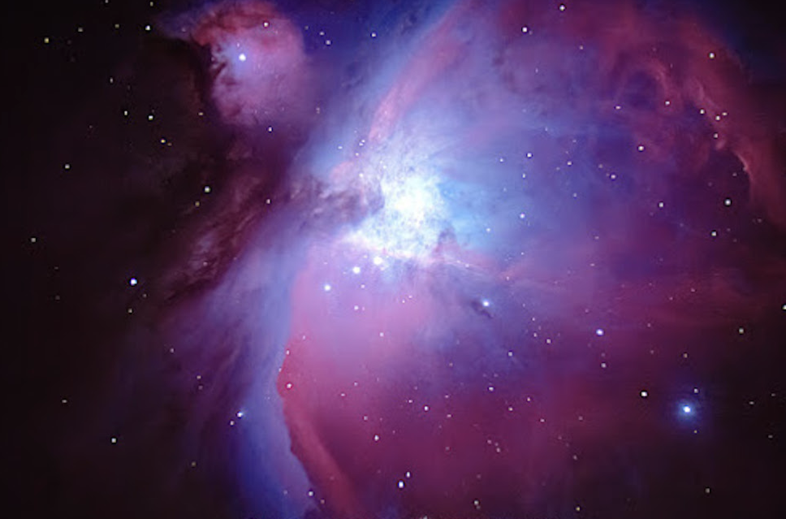
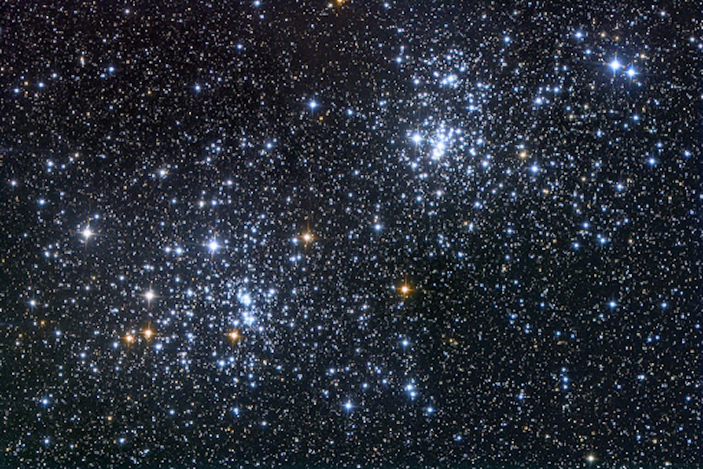

Deep Sky Objects
Nebulae

Deep Sky objects are celestial objects that
exist outside our solar system. Three major types of deep-sky objects
are nebulae, star clusters, and galaxies. The word nebula is Latin and
means "cloud." A nebula (plural = nebulae), therefore, is a cloud of
gas and dust in space. Three types of nebulae exist: bright, dark, and
planetary. Bright (or diffuse) nebulae are frequently places of star
formation. When stars begin to form, the region becomes so hot that
the stars' radiation excites the gas of a nebula, causing it to shine.
This type of bright nebula is known as an "emission nebula." The
process by which the gas (hydrogen) is excited is called "ionization."
Neutral, non-ionized hydrogen is designated HI. Ionized hydrogen is
represented as HII. For this reason, emission nebulae often are
referred to as HII regions.
If the stars are not hot enough to cause
ionization of the surrounding gas, the starlight is reflected by the
dust and can be seen as the second type of nebula — a "reflection
nebula." These nebulae look blue for the same reason our daytime sky
appears blue — the light is being scattered throughout the nebula. A
lot of nebulae have both emission and reflection components because
some of the gas may be too far from the stars to be ionized by their
radiation. The first bright nebula discovered was the Orion Nebula
(M42) in 1612. The first reflection nebula discovered was M78, also in
Orion, in 1780. Other well-known, diffuse nebulae are M8, M16, M17,
M20, and M43. M16 is actually a double object, a star cluster (NGC
6611) and a famous nebula known as the Eagle Nebula (IC 4703). M45,
the Pleiades, also contains a reflection nebula.
Dark nebulae are clouds of dust and cold gas
that can be seen because they obscure light from stars or bright
nebulae behind them. The shapes of dark nebulae are among the
strangest in the sky. Some dark nebulae, such as the Horsehead Nebula
in Orion, are small and difficult to see even with large telescopes.
Others, such as the Coal Sack in Crux, are large and easy to see with
the naked eye. The darkness of these objects is due to dust grains
within the clouds and to the presence of extremely cold hydrogen
molecules. The largest of the dark nebulae, called "molecular clouds,"
are huge areas of star formation. The clouds must be cold or the
radiation will heat up the individual atoms and prevent gravity from
collecting them together. This would keep the gas from condensing into
stars.
{kind=link}
Star clusters

A star cluster is a group of stars loosely
held together by gravity. There are three types of star clusters:
associations, open clusters and globular clusters. Associations
contain dozens of stars and resemble open clusters except that they
are poorer in stars. Here, we'll concentrate on the two other types of
star clusters. Open clusters. Located within the disk of the Milky Way
Galaxy, open clusters also are known as "galactic clusters." The
Beehive (M44), the Pleiades (M45), and the Hyades clusters have
numerous historical references. In the second century, Ptolemy
mentioned Melotte 111 in Coma Berenices and M7 in Scorpius. Not until
Galileo (1564-1642) trained his telescope on the Beehive, however, was
it discovered that these objects are made of individual stars.
Sparse open clusters contain less than a
hundred stars, while rich ones may have thousands. Open clusters form
from nebulae. All open clusters are relatively young objects,
generally no more than a few hundred million years old. We know the
open clusters we observe are young because given enough time, the
stars in an open cluster disperse due to gravitational interaction
within the cluster. If we were able to follow a single open cluster
from its formation, we would see the cluster disperse stars throughout
its entire galactic journey. Approximately 1,700 open clusters are
known. Open clusters are pretty. This makes them fun to look at for
beginning amateur astronomers. But many advanced amateurs spend a
great deal of time observing open clusters as well. Compared with
other deep-sky objects, open clusters are relatively large. This means
you will generally be using low-power eyepieces, which provide wide
fields of view. Some clusters are large enough and bright enough that
binoculars will provide more satisfying views.
Take your time when observing an open
cluster. Examine the field of view closely. Try to discern the members
of the cluster as opposed to stars that only appear in the field of
view. This is easy in many cases, but it can be a real trick when the
cluster lies within the area of the Milky Way. Also, large telescopes
sometimes can hinder the identification of cluster stars, causing
confusion by making so many background stars visible.
{kind=link}
Galaxies
 You might wonder how objects composed of up
to a trillion or more individual stars could be so difficult to
observe. Of course, the answer is distance. Galaxies are so far away
that, except for a small number, they all appear small and faint. Even
advanced observers regard observing faint galaxies as a challenge.
Today, we are indebted to the great American astronomer Edwin Hubble
(1889–1953) for developing a simple classification scheme for
galaxies. Hubble first mentioned this in a paper he wrote in 1922.
Four years later, he expanded it and added some illustrations.
Finally, in 1936, Hubble provided a better explanation of the
classification scheme in his book The Realm of the Nebulae. And it was
in this book that the famous "tuning fork" diagram first appeared.
Hubble's scheme described several different main types of galaxies:
ellipticals, spirals, and barred spirals. That's three. An argument
for a fourth Hubble type (off the tuning fork) could be made. The
fourth class contains "irregular galaxies," essentially every galaxy
not on the fork.
You might wonder how objects composed of up
to a trillion or more individual stars could be so difficult to
observe. Of course, the answer is distance. Galaxies are so far away
that, except for a small number, they all appear small and faint. Even
advanced observers regard observing faint galaxies as a challenge.
Today, we are indebted to the great American astronomer Edwin Hubble
(1889–1953) for developing a simple classification scheme for
galaxies. Hubble first mentioned this in a paper he wrote in 1922.
Four years later, he expanded it and added some illustrations.
Finally, in 1936, Hubble provided a better explanation of the
classification scheme in his book The Realm of the Nebulae. And it was
in this book that the famous "tuning fork" diagram first appeared.
Hubble's scheme described several different main types of galaxies:
ellipticals, spirals, and barred spirals. That's three. An argument
for a fourth Hubble type (off the tuning fork) could be made. The
fourth class contains "irregular galaxies," essentially every galaxy
not on the fork.
Clusters of galaxies After stars form, they
arrange themselves into clusters. So do galaxies. Clusters of galaxies
may be made up of a handful of galaxies or as many as a thousand. As
with star clusters, clusters of galaxies are held together by mutual
gravitational attraction. Please note that a galactic cluster and a
cluster of galaxies are totally different. The first is a group of
stars (also known as an open cluster). The second is a group of
galaxies. The most famous cluster of galaxies is the one that contains
our Milky Way. Known as the Local Group, it is composed of almost 40
members. Two other well-known and well-observed clusters of galaxies
are the Virgo cluster and the Fornax cluster. The Virgo cluster lies
nearly 50 million light-years from Earth and is a bright cluster. A
number of Messier objects are members of it, including M49, M49, M60,
M84, M85, M86, M87, M88, M89, M90, M98, M99, and M100. In addition,
more than one hundred NGC galaxies belong to the Virgo cluster. Many
observers think the Fornax cluster is the finest for amateur
astronomers to observe. Eighteen galaxies make up the cluster. The
brightest is NGC 1316 at visual magnitude 8.8. NGC 1399, magnitude
9.8, is the next easiest to see. NGC 1365 is third at magnitude 9.5.
This galaxy is a barred spiral seen face on, with open spiral arms. In
a wide-field, high-power eyepiece, up to ten members of this cluster
of galaxies can be viewed. Superclusters of galaxies
The largest separate structures in the
universe, and some would say the structures that define the shape of
our universe, are superclusters of galaxies. The Local Group, which
contains the Milky Way, belongs to a supercluster of galaxies called
the Local Supercluster. The Local Group is at one end and the Virgo
cluster is near its center. The major axis of the Local Supercluster
stretches 125 to 150 million light-years. Other nearby superclusters
of galaxies include the Hydra-Centaurus Supercluster, which lies at a
distance of about 150 million light-years and the Perseus
Supercluster, which is roughly 220 million light-years away.
Top 5 Deep Sky Objects
Deep Sky Object Gallery

{kind=link}
{kind=link}
{kind=link}
{kind=link}


{kind=link}
{kind=link}
{kind=link}

{kind=link}
{kind=link}

{kind=link}


{kind=link}
{kind=link}

{kind=link}
{kind=link}
{kind=link}
{kind=link}
{kind=link}
{kind=link}
{kind=link}
{kind=link}
{kind=link}
Triangulum Galaxy (Messier 33)
Triangulum Galaxy (Messier 33) - distance from the Earth 2.9 million light years. The most distant object that can be seen with naked eye.